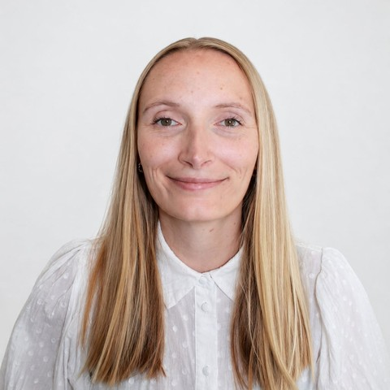

Danmark
Med en baggrund i sundhedsvæsenet og en kandidatgrad i IT kombinerer jeg analytiske, tekniske og brugercentrerede kompetencer. Jeg motiveres af at løse komplekse problemer, arbejde tæt sammen med andre og omsætte brugerbehov til digitale løsninger, der holder i praksis.
Med en baggrund i sundhedsvæsenet og en kandidatgrad i IT har jeg udviklet en stærk kombination af analytiske, tekniske og brugercentrerede kompetencer.
Jeg har programmeret i Python og JavaScript og har erfaring med API'er, dataanalyse, IoT-data og maskinlæring. Gennem mine studieprojekter har jeg arbejdet med konkrete problemstillinger i samarbejde med både Vejle Kommune og EWII — fra problemformulering og dataanalyse til udvikling af løsningsforslag.
Min erfaring har givet mig indsigt i komplekse arbejdsgange og brugerbehov, mens min kandidatgrad har styrket mine kompetencer inden for softwareudvikling, UX og digitale løsninger. Jeg trives med at lære nyt, løse komplekse problemer og omsætte idéer til konkrete løsninger.
Jeg motiveres af at løse komplekse problemer, arbejde sammen med andre og omsætte brugerbehov til effektive digitale løsninger — og jeg søger en rolle, hvor jeg kan fortsætte med at udvikle mine programmeringskompetencer og vokse til en stærk backend-udvikler i et dygtigt team.
Speciale: Udviklede en machine learning-model baseret på IoT-data i samarbejde med Vejle Kommunes IT-afdeling, for at forudsige hvornår indeklimaet ville forringes, så personalet kunne handle proaktivt — inklusive en figur og besked designet til at advare medarbejderne i tide til at lufte ud.
Arbejdede med Vejle Kommunes udfordringer omkring indeklimakvalitet. Målet var at forudsige, hvornår indeklimaet ville begynde at forringes, så personalet kunne handle proaktivt, før det blev et problem.
Indsamlede og behandlede data fra IoT-sensorer, hentede de underliggende data med SQL, rensede dem og analyserede dem i Python for at undersøge, hvilke faktorer der påvirkede indeklimaet. Vejrdata fra DMI blev integreret i modellen via deres API, og resultatet blev leveret som både en prognosemodel og en konkret advarsel designet til de mennesker, der skulle bruge den.
Arbejdede med en konkret problemstilling omkring datafejl, afgrænset i samarbejde med EWII, og sporede den tilbage til de underliggende årsager og mønstre.
Udviklede en spilapplikation fra idé til færdigt, testet produkt gennem hele det agile forløb.
Arbejdede med brugeroplevelse og brugertest af digitale løsninger gennem hele uddannelsen, fra at identificere problemer til at prototype forbedringer.
Arbejder systematisk med at forstå et problem, analysere det og finde frem til en løsning, der virker i praksis.
Griber komplekse opgaver metodisk an, fra problemformulering til implementering.
Forklarer komplekse tekniske og faglige emner klart til forskellige målgrupper.
Trives i tæt samarbejde med andre og tager samtidig ejerskab for egne opgaver.
Motiveres af at lære nye teknologier at kende og gå i dybden med tekniske problemer.
UX-erfaring kombineret med en sundhedsfaglig baggrund giver en naturlig fornemmelse for, hvem en løsning skal fungere for.